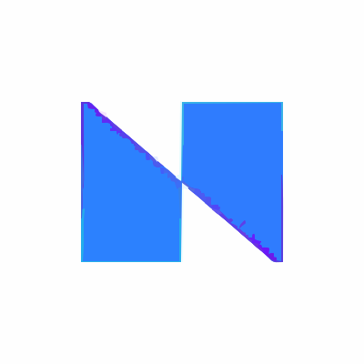

Senior Analytics Engineer
I turn messy operational data
into clear, usable analytics.
8 years at Maersk building data pipelines, KPI layers, and automation on Azure & Databricks — for teams who need decisions, not dashboards.
SPB
8+
Years in data
14
Projects delivered
$100K+
Operational savings
400+
Hours automated/yr
300+
Colleagues served
About
I'm a Senior Analytics Engineer who has spent the last 6 years at Maersk building the data systems behind operational decisions in global shipping — from automated exception notifications that save $100K/year to KPI platforms serving 300+ colleagues across North America.
My edge is in the full stack of data work: I design the models, write the pipelines, build the automation, and care about what the metric means to the person reading it. I work primarily on Azure and Databricks, with a bias toward solutions that are clear, maintainable, and observable — built to last past the initial delivery.
Currently open to senior data engineering and analytics engineering roles, and to consulting engagements where there's a real operational problem to solve.
Timeline
-
-
Associate Software Engineer

Nisum -
Business Analytics
-
Data Analyst
-
Data Analyst / Engineer
-
Senior Analytics Engineer
Projects
End-to-end case studies across data platforms, automation, AI, and cloud.
Featured highlights
Data Engineering
Integrated Customer Data Marketplace
Central KPI marketplace with governed definitions and ER modeling for supply-chain programs.
Consistent KPI definitions
Reduced ad-hoc reporting
View project →
Automation & Data Apps
Exception Notifier (North America)
Automated exception communications with observability, saving ~$100k and 400 hours/year.
$100K+ saved
400 hrs/yr automated
View project →
Cloud Engineering
Azure IaC + CI/CD
Repeatable infrastructure and deployment pipelines for dev and production environments.
Repeatable environments
Code-reviewed infra
View project →
Explore by category
Data Engineering
Reliable pipelines, curated data layers, and KPI-ready modeling.
- CX Team Performance Platform — CX performance platform
- Transit & Delivery Time Performance — Middle-mile transit analytics
Automation & Data Apps
Lightweight apps, automation helpers, and workflow accelerators.
- Microsoft Ecosystem Integrations Toolkit (Python) — Microsoft integrations toolkit
- Cisco Webex Contact Center API (GraphQL) — GraphQL telephony metrics API
Machine Learning & AI
Forecasting, sentiment signals, and insight extraction.
- Customer Temperature Clustering — K-means feedback clustering
- SCM Forward Looking Forecasting — Demand forecasting
Cloud Engineering
Azure infrastructure, CI/CD, and cloud governance.
- IaC + CI/CD Standardization — IaC & CI/CD with Terraform
- GitHub Workflows Optimization — Optimized GitHub workflows
Skills
What I build with and how I think about problems.
Languages
Data Engineering
Cloud & Platforms
BI & Data Products
Automation & DevOps
Architecture
Contact
Open to interesting problems and high-impact builds.